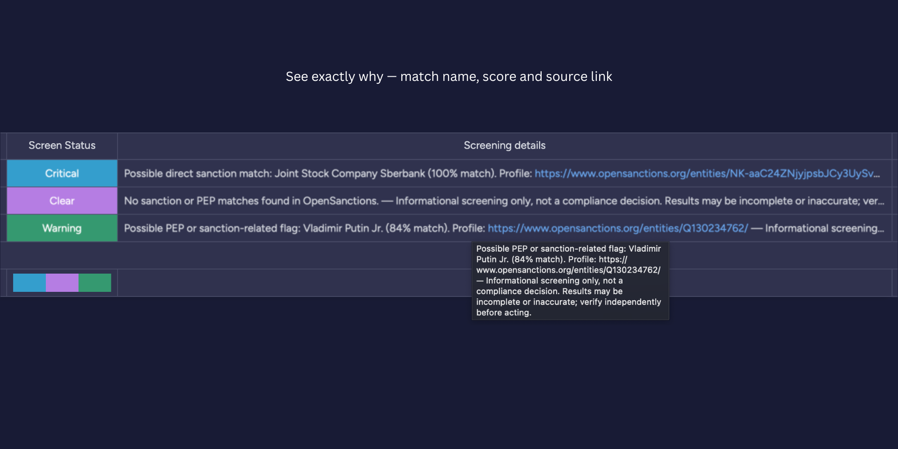

Screen every new vendor for sanctions & PEP risk
VendorScreen checks each vendor you add to a monday.com board against global sanctions and PEP lists — automatically — and writes the result straight back to the columns you already use. No manual lookups, no switching tools.

Compliance screening, on autopilot
Set it up once and every new vendor is screened the moment it lands on your board.
Automatic on every item
Triggered when a vendor item is created — or on demand from a button. Results appear in seconds.
Sanctions & PEP coverage
Powered by OpenSanctions global data — sanctions lists and politically exposed persons in one check.
See exactly why
Every result carries the matched entity's name, the match score, and a link to the source profile.
Instant Critical alerts
When a vendor screens as Critical, the automation owner is notified right away — nothing slips through.
Exportable audit trail
Every screening is recorded. Filter by board and download a CSV anytime for your compliance records.
Private & multi-tenant
Data is segregated per account, encrypted in transit and at rest, and fully deleted on uninstall.
Three clear outcomes
VendorScreen scores each match and writes one of three risk levels back to your status column.
No sanction or PEP match was surfaced for the vendor at the time of the query.
A possible PEP or sanction-related flag worth a human review before you proceed.
A likely direct sanction match — flagged for immediate attention, with an instant alert.
See it in action
Add a vendor, and the status and details fill in on their own.



How it works
Three steps, then it runs itself.
Add the recipe
In monday's automation builder, pick “When an item is created, screen the vendor.”
Map your columns
Choose the status and details columns to write to — and optionally a country column to sharpen matches.
Let it screen
Every new vendor is checked automatically, flagged, alerted on if Critical, and logged for audit.
Simple monthly plans
Start free. Upgrade anytime through monday.com's built-in billing.
Screenings per month, to get started.
For growing vendor pipelines.
For high-volume onboarding.
Bring compliance screening to your board
Install VendorScreen from the monday.com marketplace and screen your next vendor in minutes.